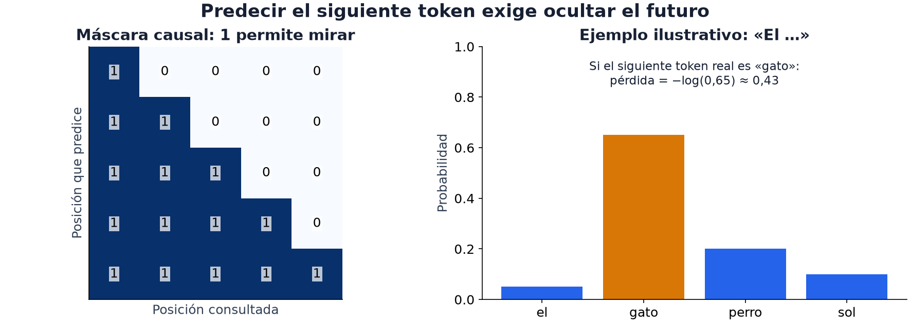

¿Cómo cambia el significado de «banco» entre «me senté en el banco» y «fui al
banco a depositar»? Un ID de vocabulario puede ser el mismo; la representación
contextual depende de los otros tokens. Esa es la atención del módulo 13
aplicada a lenguaje.
La representación útil también depende de la pregunta: clasificar un texto,
localizar un cambio o predecir su continuación no requieren la misma salida.
El cuaderno 09 · Lenguaje y audio de Laboratorios guiados dibuja las probabilidades de siguiente token y permite cambiar el suavizado y el contexto.

En la máscara de la izquierda, cada fila puede consultar su posición y las
anteriores; los ceros excluyen el futuro. A la derecha, el token real «gato»
recibe probabilidad 0.65 y aporta una pérdida −log(0.65) ≈ 0.43.
Asignarle menos probabilidad aumenta esa pérdida, aunque siga siendo el token
más probable. Así distinguimos aprender a predecir de contar solo aciertos.
Tokenización: el paso que decide lo demás
El tokenizador convierte texto en tokens y luego en IDs de vocabulario.
Según el modelo, un token puede representar una palabra, un fragmento, un
carácter o bytes. La segmentación depende del vocabulario: una palabra rara
puede dividirse en varios fragmentos, pero no hay una regla universal de «una
palabra frecuente = un token». Los IDs son índices; que dos IDs sean cercanos
no significa que sus palabras tengan significados próximos.
Este fragmento requiere que el directorio local contenga el tokenizador
correspondiente; no crea ni descarga esos archivos:
from transformers import AutoTokenizertok = AutoTokenizer.from_pretrained("./models/bge-base-en-v1.5") # ruta LOCALlote = tok(["hola mundo", "un texto bastante más largo que el anterior"], padding=True, truncation=True, max_length=128, return_tensors="pt")print(lote["input_ids"].shape) # (2, n_tokens)print(lote["attention_mask"][0]) # 1 en los tokens reales, 0 en el relleno
Los cuatro argumentos, y por qué cada uno:
padding=True rellena hasta el largo del más largo del lote, para que
quepan en un tensor.
truncation=True corta lo que se pase de max_length.
max_length limita cuántos tokens se conservan. En atención densa, los
pares de posiciones crecen cuadráticamente con el largo; el tiempo total no
se cuadruplica necesariamente, pues incluye otras operaciones y depende del
padding y de la implementación.
return_tensors="pt" devuelve tensores de PyTorch en vez de listas.
La máscara de padding impide tratar el relleno como contenido. No es la
máscara causal de la figura: aquella oculta posiciones futuras. Un encoder
bidireccional puede leer tokens válidos a ambos lados y seguir necesitando una
máscara de padding.
Pasar la máscara al modelo tampoco reemplaza enmascarar el pooling: los estados
ocultos en posiciones de relleno no tienen por qué valer cero. El promedio
debe sumar solo estados válidos y dividir por su cantidad.
Lo que queda fuera no llega al modelo
El truncado puede descartar contenido sin lanzar una excepción. Si la señal
está al final, reducir max_length puede eliminarla. Los largos ayudan a
entender a cuántos ejemplos afecta:
largos = [len(tok(t)["input_ids"]) for t in textos]print(min(largos), sorted(largos)[len(largos) // 2], max(largos))
Es el módulo 01 aplicado a tokens: mirar lo que efectivamente recibe el modelo.
Clasificar texto: qué parte aprende
Con un encoder congelado, calculas vectores y entrenas logística o boosting
sobre ellos, como en el módulo 12. Ahorras retropropagar por el encoder, pero
las distinciones que este perdió no reaparecen por cambiar el clasificador.
Con fine-tuning, la cabeza y parte del encoder aprenden con tus etiquetas.
Puede adaptar mejor la representación o sobreajustar los pocos ejemplos.
No existe un learning rate o número de épocas óptimo para todos los modelos.
La comparación interesante mantiene los datos de validación y pregunta qué
aporta permitir que cambie la representación. El costo incluye extraer los
vectores o entrenar, y después procesar todos los textos evaluados.
Detección de puntos de cambio
Esta es la técnica que casi no aparece en los cursos y que fue una tarea
completa: Ghost of the Machine (2026). Un pasaje empieza escrito por una
persona y en algún punto sigue una máquina; hay que encontrar el índice de
carácter exacto del cambio.
Una hipótesis inicial que debes contrastar con el baseline constante:
Parte el texto en frases.
Codifica cada frase con el encoder permitido.
Mide la similitud entre frases consecutivas. Una caída puede indicar
cambio de tema y no necesariamente de autor.
Propón la frontera del mínimo como candidato y evalúalo. No se garantiza
que coincida con la frontera humana/máquina.
import numpy as npdef punto_de_cambio(vectores): """Candidata: frontera con menor coseno entre frases consecutivas.""" if len(vectores) < 2: raise ValueError("Se necesitan al menos dos frases para proponer una frontera") V = normalizar_filas(vectores) similitud = (V[:-1] * V[1:]).sum(axis=1) # coseno entre consecutivas return int(np.argmin(similitud)) + 1 # índice de la primera frase "nueva"
La salida debe convertir la frontera entre frases a un índice de carácter en
el texto original. Conserva offsets al segmentar: reconstruir el texto con
espacios nuevos desplaza la respuesta. En "Hola. Sigue.", «Sigue» comienza
en el carácter 7; unir las frases con un solo espacio daría 6. Tampoco confundas
índices de caracteres con posiciones de bytes de un archivo UTF-8.
La métrica exp(-abs(error)/100) permite
comparar candidatos cercanos; un score bruto positivo puede seguir por debajo
del baseline y no dar puntos normalizados.
El baseline constante obtuvo 28.6/100 en leaderboard A. En tu validación,
ajusta su fracción solo con train y mídelo de nuevo. Una señal de similitud puede
mejorar, empeorar o no cambiar ese resultado; el experimento decide.
Modelado de lenguaje: objetivo y evaluación
Un modelo causal estima P(token_t | tokens_anteriores). Se entrena prediciendo
el siguiente token, con la entrada y el objetivo desplazados una posición; usar
un token futuro en su contexto introduce fuga. BERT usa enmascarado y no tiene
sin más el mismo objetivo causal.
La pérdida media de siguiente token es la entropía cruzada de los tokens válidos.
Para un token real con probabilidad p, esa pérdida aporta −log(p):
acertar con probabilidad 0.51 y con 0.99 no cuesta lo mismo. Su exponencial es
la perplejidad, el inverso de la media geométrica de las probabilidades de
los tokens reales. Menor es mejor al comparar el mismo tokenizer, corpus y
reglas de evaluación.
Este caso completo muestra una predicción uniforme frente a otra que asigna
más probabilidad a los objetivos; no descarga ni simula preentrenamiento:
import mathimport torchfrom torch.nn import functional as F# Tres posiciones con vocabulario de cuatro tokens y objetivo conocido.objetivos = torch.tensor([1, 2, 3])logits_uniformes = torch.zeros(3, 4)logits_mejores = torch.zeros(3, 4)logits_mejores[torch.arange(3), objetivos] = math.log(9)for logits in (logits_uniformes, logits_mejores): perdida = F.cross_entropy(logits, objetivos) print(round(perdida.exp().item(), 3)) # 4.0 y 1.333
La distribución uniforme asigna 1/4 a cada token y tiene perplejidad 4.
En la segunda, exp(log(9)) = 9 y los otros tres logits aportan 1 cada uno:
la probabilidad correcta es 9/12 = 0.75 y la perplejidad 1/0.75 ≈ 1.333.
«Número de opciones» es una intuición exacta solo en el caso uniforme.
Para evaluar secuencias reales, excluye padding de la suma y divide por el número
de tokens válidos total, no por el número de batches. No compares perplejidad
de modelos con tokenizadores diferentes como si la unidad fuese idéntica.
Un mismo modelo puede generar o puntuar
El Syllabus IOAI incluye «LLMs preentrenados (open-source y vía API)» como
práctica 💻. Los modelos accesibles y su uso dependen del contrato de la prueba:
Find the Order (2026) permitía Qwen2.5-0.5B, de 500 millones de parámetros.
Dos usos distintos son:
Generar. Pedirle texto. Útil cuando la tarea pide producir algo.
Puntuar. Usar la probabilidad que el modelo asigna a una secuencia como
medida de qué tan natural le resulta. Es una hipótesis para Find the Order: para
decidir si el turno A va antes que el B, se le pregunta al modelo qué orden le
resulta más probable. No hace falta que genere nada. La probabilidad no prueba
que el orden sea verdadero: puede preferir una conversación común a una rara
pero correcta. Además, sumar log-probabilidades penaliza secuencias largas;
promediarlas cambia el criterio. La elección debe corresponder a la comparación
que intentas hacer.
Y una advertencia sobre el LLM integrado de la plataforma (Gemma 3 en 2026, con
1.000 tokens de salida por consulta): es un asistente para ti, no una
herramienta de tu solución. Tu notebook no puede llamarlo.
⚠️ Las tres trampas
1. Suponer que un ID del Hub estará disponible offline. Un ID puede
resolverse desde caché, pero no garantiza que estén todos los archivos.
Usa los pesos y rutas preparados en el entorno de la tarea; una ejecución
local con caché caliente no demuestra que funcione en el juez.
2. Emparejar mal tokenizador y modelo. Sus vocabularios y tokens especiales
forman un contrato. Una combinación incorrecta puede fallar por índices fuera
de rango o ejecutarse interpretando tokens distintos de los que creías.
3. Índices de token contra índices de carácter. Si la tarea pide una posición
en caracteres —como Ghost of the Machine— y tú trabajaste en frases o en
tokens, hay que convertir. El tokenizador puede dar el mapeo
(return_offsets_mapping=True en tokenizadores rápidos que lo soportan).
Si segmentas por frases, conserva las posiciones al hacerlo.
Tokenizadores y alineación con el texto original.
El 5 permite preguntar qué limita más la adaptación a otra lengua: cómo se
fragmentan sus palabras o qué representaciones aprende el encoder. Cambiar
vocabulario requiere coordinar tokenizador y embeddings; no es intercambiar
un archivo sin modificar el modelo.
🎯 Mini-desafío (formato IOAI)
Tarea: Ghost of the Machine (IOAI 2026, día 2), completa y con el
presupuesto real.
Métrica: exp(−|predicho − real| / 100), promediada, ×100.
Referencias del split A: baseline 28.6, Comité 93.41. Mide de nuevo
el baseline en tu split y mantén separada esa comparación local.
Modelo permitido: solo bge-base-en-v1.5.
Límite: 10 minutos de reloj, cubriendo entrenamiento e inferencia.
Puedes contrastar tres hipótesis: una posición constante captura dónde
suelen cambiar los textos; una caída de similitud captura una frontera
semántica; un encoder afinado podría distinguir señales de procedencia.
Examinar dónde discrepan revela más que asumir una progresión de mejoras.
El enunciado atribuye 93.41 a fine-tuning y detección de cambio por oraciones,
sin identificar esta receta exacta de mínimos de coseno. La receta de arriba
es un candidato didáctico, no una reproducción de esa solución.
Para poner a prueba la intuición
¿Una caída de similitud señala cambio de autor o cambio de tema? Busca un contraejemplo.
¿Por qué una predicción uniforme de cuatro tokens tiene perplejidad cuatro?
¿Qué se pierde al truncar o al reconstruir el texto sin conservar sus offsets?